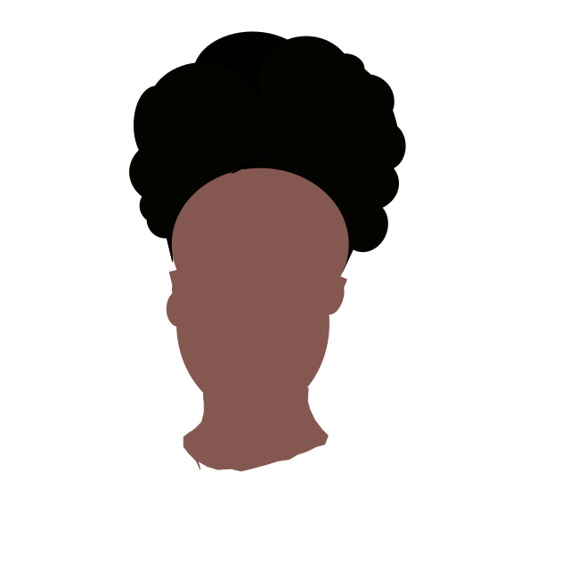

Introduction
Hi, my name is Adhana Pond. I am 16 years old and my birthday is on August seventh. I am from the island of Dominica (And NO! Not the Dominican Republic!!). Pink, blue, yellow, white, and black are the colors that speak to me the most. I love cheesy pasta or anyhting that has cheese on it. I am a picky eater and I do not like foods like salads or anything with vegetables.(But I do eat them if necessary). I often have to be in a mood to eat foods like candies or snacks.


Hobbies
I do not have any set hobbies, but I am interested in learning to do new things and improving the ones I already have, such as:
- doing my hair
- learning how to apply makeup
- painting
- cooking


